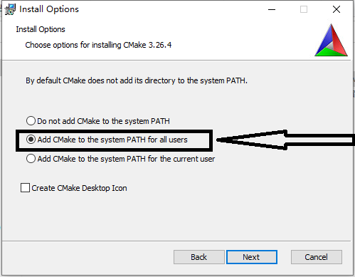

预备知识
CMake是什么
CMake是一个管理代码构建的工具。与平台和构建系统无关。最初CMake只用于生成不同版本的Makefile。现在CMake可以生成不同构建工具构建文件，也可以生成不同IDE（如Visual Studio、XCode）的项目文件。
CMake也可以在一定程度上简化C/C++第三方库的引入与使用流程。
CMake主要用于构建C或C++程序，但是也可以用于其他语言程序的构建。
****
环境搭建与学习准备
前置条件
如果是用Linux学习，需要先安装GCC、make等工具。Ubuntu上安装命令如下：
sudo apt install gcc g++ make
如果是用Windows，需要先装有编译工具。建议安装MinGW环境进行学习（用Visual Studio也可以，但是用来学习cmake的话感觉有点笨重），本课程用的编译工具是MinGW，能和课程工具保持一致最好。
MinGW常用有以下两个版本，选择其中一个即可。w64devkit提供的工具更多，操作更接近Linux。所以推荐用w64devkit。
w64devkit：https://github.com/skeeto/w64devkit/releases
mingw-builds：https://github.com/niXman/mingw-builds-binaries/releases
最好会GCC与Make的基本用法。但不会也没关系，影响不大。
Ubuntu安装CMake
sudo apt install cmake
Windows安装CMake
cmake官网：https://cmake.org/
下载安装包，直接下载msi版本。安装时将添加到系统环境变量勾选。

安装完成之后测试
cmake --version
学习材料
1、官方文档：https://cmake.org/cmake/help/latest/
2、tutorial代码：https://cmake.org/cmake/help/latest/_downloads/987664e19bf1c78e58910f17f64df29f/cmake-3.26.4-tutorial-source.zip
CMake Tutorial
第一步 起点
练习1 最简单的CMake项目
CMakeLists.txt
# TODO 1: 设置CMake最低版本要求为 3.10
cmake_minimum_required(VERSION 3.10)
# TODO 2: 创建一个名为Tutorial的项目
project(Tutorial)
# TODO 3: 为项目添加一个叫做 Tutorial 的可执行文件
# Hint: 一定要指定源文件 tutorial.cxx
add_executable(Tutorial tutorial.cxx)要点
①cmake_minimum_required
用于指定所需cmake最低版本
用法与示例：
# 用法
cmake_minimum_required(VERSION <版本号>)
# 示例
cmake_minimum_required(VERSION 3.10)如果当前使用的cmake版本低于所指定的版本，则会报错并且终止执行。
②project
指定项目名称
用法与示例：
# 用法
project(<项目名>)
# 示例 指定项目名称为Tutorial
project(Tutorial)③add_executable
利用指定的源文件在项目中添加可执行文件
用法与示例：
# 用法 源文件可以有多个，用空格隔开
add_executable(<可执行文件名> <源文件列表>)
# 示例 可执行文件名为Tutorial，用到的源文件为tutorial.cxx
add_executable(Tutorial tutorial.cxx)④cmake命令常用执行方法
# 用法
cmake -G <生成器名称> <CMakeLists.txt所在的目录>如果使用默认生成器，则-G这部分可以省略，具体支持哪些生成器可以用cmake --help查看
扩展：设置环境变量CMAKE_GENERATOR可以指定默认生成器，简化cmake命令的执行
课后练习
- 自行准备一个或多个源文件，多练习几遍cmake项目的创建与生成可执行文件流程，直到能默写出CMakeLists.txt中的内容并且熟练通过cmake构建出可执行文件。
- 配置CMAKE_GENERATOR环境变量并修改不同值，通过cmake --help命令查看该变量对默认Generator(生成器)的影响。
- 如果电脑上有多套环境或工具（例如有MinGW与Visual Studio或CodeBlocks），修改-G指定不同生成器，尝试生成不同工具对应的项目。
练习2 指定C++标准
CMakeLists.txt
# TODO 1: 设置CMake最低版本要求为 3.10
cmake_minimum_required(VERSION 3.10)
# TODO 2: 创建一个名为Tutorial的项目
project(Tutorial)
# TODO 7: 用上面project命令将项目版本设为 1.0
# TODO 6: 设置变量 CMAKE_CXX_STANDARD 为 11
# CMAKE_CXX_STANDARD_REQUIRED 为 True
set(CMAKE_CXX_STANDARD 26)
set(CMAKE_CXX_STANDARD_REQUIRED True)
# TODO 8: 用 configure_file 复制 TutorialConfig.h.in 生成
# TutorialConfig.h
# TODO 3: 为项目添加一个叫做 Tutorial 的可执行文件
# Hint: 一定要指定源文件 tutorial.cxx
add_executable(Tutorial tutorial.cxx)要点
①set
用于给变量设置值
用法与示例：
# 用法
set(<变量名> <变量值>)
# 示例
set(CMAKE_CXX_STANDARD 26)
set(SRC_DIR /home/src)②CMAKE_CXX_STANDARD
变量，用于指定C++标准
用法与示例：
# 用法 截止2023/6 std_num∈{98,11,14,17,20,23,26}
set(CMAKE_CXX_STANDARD <std_num>)
# 示例
set(CMAKE_CXX_STANDARD 11)
set(CMAKE_CXX_STANDARD 17)在C++中可以通过输出__cplusplus查看当前编译器所用的标准
__cplusplus的值 对应的C++标准 199711 C++98 201103 C++11 201402 C++14 201703 C++17 202002 C++20 202100 C++23
③CMAKE_CXX_STANDARD_REQUIRED
变量，如果设置为True，则通过CMAKE_CXX_STANDARD设置的C++标准是必需的，如果编译器不支持该标准则会输出错误提示信息。如果不设置或者设置为False，则CMAKE_CXX_STANDARD设置的C++标准不是必需的，如果编译器不支持对应的标准，则会使用上一个版本的标准进行编译。
用法与示例：
set(CMAKE_CXX_STANDARD_REQUIRED True)
课后练习
- 在std_num∈{98,11,14,17,20,23,26}的范围内设置C++标准，输出__cplusplus的值并观察规律。
- 设置std_num∉{98,11,14,17,20,23,26}的C++标准值，观察cmake提示信息并输出__cplusplus的值，总结其规律。
- 类比C++标准的指定，查询文档或其他资料，补充C语言标准指定方式，并准备几个C语言源文件进行实验。
练习3 添加版本号和配置头文件
有些时候需要让源代码能访问CMakeLIsts.txt当中的数据，比如说在CMakeLists.txt中定义版本号之后，希望能在源程序中对版本号进行输出。本节内容为如何让源代码中能访问CMakeLists.txt中的变量数据。
CMakeLists.txt
# TODO 1: 设置CMake最低版本要求为 3.10
cmake_minimum_required(VERSION 3.10)
# TODO 2: 创建一个名为Tutorial的项目
project(Tutorial VERSION 11.25)
# TODO 7: 用上面project命令将项目版本设为 1.0
# TODO 6: 设置变量 CMAKE_CXX_STANDARD 为 11
# CMAKE_CXX_STANDARD_REQUIRED 为 True
set(CMAKE_CXX_STANDARD 11)
set(CMAKE_CXX_STANDARD_REQUIRED True)
# set(STR_TEST "Hello World")
# TODO 8: 用 configure_file 复制 TutorialConfig.h.in 生成
# TutorialConfig.h
configure_file(TutorialConfig.h.in TutorialConfig.h)
# TODO 3: 为项目添加一个叫做 Tutorial 的可执行文件
# Hint: 一定要指定源文件 tutorial.cxx
add_executable(Tutorial tutorial.cxx)
# TODO 9: 用 target_include_directories 添加头文件搜索目录 ${PROJECT_BINARY_DIR}
# PUBLIC PRIVATE INTERFACE
target_include_directories(Tutorial PUBLIC ${PROJECT_BINARY_DIR})TutorialConfig.h.in
#define Tutorial_VERSION_MAJOR @Tutorial_VERSION_MAJOR@
#define Tutorial_VERSION_MINOR @Tutorial_VERSION_MINOR@要点
〇project第二种用法
定义项目名和版本号
project(Tutorial VERSION 2.15)①configure_file
将输入文件复制为输出文件，并把其中的变量引用替换为CMakeLists.txt中定义的变量，如果变量未定义，则替换为空串。输入文件中的变量引用方式为**@@变量名@@或者${变量名}**。
输入文件默认路径为CMakeLists.txt所在的路径，输出文件的路径默认为cmake生成文件所在的路径。
用法与示例：
# 用法
configure_file(<inputfile> <outputfile>)
# 示例
configure_file(TutorialConfig.h.in TutorialConfig.h)在输入文件中，用宏定义的方式对变量进行定义
#define Tutorial_VERSION_MAJOR @Tutorial_VERSION_MAJOR@
#define Tutorial_VERSION_MINOR ${Tutorial_VERSION_MINOR}
// 因为CMakeLists.txt中定义的字符串都是裸的，所以如果一个变量的值为字符串，需要用双引号包起来
#define STR_VAR "@STR_VAR@"上述定义中@Tutorial_VERSION_MAJOR@、${Tutorial_VERSION_MINOR}、@STR_VAR@在输出文件中会被替换为CMakeLists.txt中定义的对应变量值。
②target_include_directories
给指定的目标添加头文件搜索路径。
用法与示例：
# 用法
target_include_directories(<target> <INTERFACE|PUBLIC|PRIVATE> <dir1 dir2 ...>)
# 示例
target_include_directories(Tutorial PUBLIC ${PROJECT_BINARY_DIR})
③_VERSION_MAJOR
版本号第一个组成部分。该变量为cmake自动定义的一个变量，不需要手动定义，值来自于project的定义。其中为用project定义的项目名。
④_VERSION_MINOR
版本号第二个组成部分。该变量为cmake自动定义的一个变量，不需要手动定义，值来自于project的定义。其中为用project定义的项目名。
课后练习
①通过本节学习的内容访问更多CMakeLists.txt中的变量。
②自行探究一下include_directories的用法，比较与target_include_directories的异同。
第二步 加个库
练习1 创建库文件
前面的练习当中创建了可执行文件。本节将学习如何创建库文件以及库文件的使用 。同时也将练习将一个项目划分为多个子目录的方法。
CMakeLists.txt
cmake_minimum_required(VERSION 3.10)
# set the project name and version
project(Tutorial VERSION 1.0)
# specify the C++ standard
set(CMAKE_CXX_STANDARD 11)
set(CMAKE_CXX_STANDARD_REQUIRED True)
# TODO 7: Create a variable USE_MYMATH using option and set default to ON
# configure a header file to pass some of the CMake settings
# to the source code
configure_file(TutorialConfig.h.in TutorialConfig.h)
# TODO 8: Use list() and APPEND to create a list of optional libraries
# called EXTRA_LIBS and a list of optional include directories called
# EXTRA_INCLUDES. Add the MathFunctions library and source directory to
# the appropriate lists.
#
# Only call add_subdirectory and only add MathFunctions specific values
# to EXTRA_LIBS and EXTRA_INCLUDES if USE_MYMATH is true.
# TODO 2: Use add_subdirectory() to add MathFunctions to this project
add_subdirectory(MathFunctions)
# add the executable
add_executable(Tutorial tutorial.cxx)
# TODO 9: Use EXTRA_LIBS instead of the MathFunctions specific values
# in target_link_libraries.
# TODO 3: Use target_link_libraries to link the library to our executable
target_link_libraries(Tutorial PUBLIC MathFunctions)
# TODO 4: Add MathFunctions to Tutorial's target_include_directories()
# Hint: ${PROJECT_SOURCE_DIR} is a path to the project source. AKA This folder!
# TODO 10: Use EXTRA_INCLUDES instead of the MathFunctions specific values
# in target_include_directories.
# add the binary tree to the search path for include files
# so that we will find TutorialConfig.h
target_include_directories(Tutorial PUBLIC
"${PROJECT_BINARY_DIR}"
"${PROJECT_SOURCE_DIR}/MathFunctions"
)MathFunctions/CMakeLists.txt
# TODO 1: Add a library called MathFunctions
# Hint: You will need the add_library command
add_library(MathFunctions mysqrt.cxx)要点
①add_subdirectory
为当前项目添加子目录。子目录当中必须包含一个CMakeLists.txt文件，其中可以不写cmake_minimum_required与project。
用法与示例：
# 用法
add_subdirectory(<source_dir>)
# 示例
add_subdirectory(MathFunctions)②target_link_libraries
为指定目录指定链接库。
用法与示例：
# 用法
target_link_libraries(<target> ... <item>... ...)
# 示例
target_link_libraries(Tutorial PUBLIC MathFunctions)③PROJECT_SOURCE_DIR
最后一次调用project的CMakeLists.txt文件所在的目录。
④add_library
用指定的源文件生成库文件。
用法与示例：
# 用法
add_library(<name> [<source>...])
# 示例
add_library(MathFunctions mysqrt.cxx MathFunctions.h)
练习2 库文件可选编译
本节内容为设置库文件（子目录）可选编译。
cmake_minimum_required(VERSION 3.10)
# set the project name and version
project(Tutorial VERSION 1.0)
# specify the C++ standard
set(CMAKE_CXX_STANDARD 11)
set(CMAKE_CXX_STANDARD_REQUIRED True)
# TODO 7: Create a variable USE_MYMATH using option and set default to ON
option(USE_MYMATH "Use My Math?" OFF)
# configure a header file to pass some of the CMake settings
# to the source code
configure_file(TutorialConfig.h.in TutorialConfig.h)
# TODO 8: Use list() and APPEND to create a list of optional libraries
# called EXTRA_LIBS and a list of optional include directories called
# EXTRA_INCLUDES. Add the MathFunctions library and source directory to
# the appropriate lists.
#
# Only call add_subdirectory and only add MathFunctions specific values
# to EXTRA_LIBS and EXTRA_INCLUDES if USE_MYMATH is true.
# TODO 2: Use add_subdirectory() to add MathFunctions to this project
if(USE_MYMATH)
add_subdirectory(MathFunctions)
list(APPEND EXTRA_LIBS MathFunctions)
list(APPEND EXTRA_INCLUDES "${PROJECT_SOURCE_DIR}/MathFunctions")
endif()
# add the executable
add_executable(Tutorial tutorial.cxx)
# TODO 9: Use EXTRA_LIBS instead of the MathFunctions specific values
# in target_link_libraries.
# TODO 3: Use target_link_libraries to link the library to our executable
target_link_libraries(Tutorial PUBLIC ${EXTRA_LIBS})
# TODO 4: Add MathFunctions to Tutorial's target_include_directories()
# Hint: ${PROJECT_SOURCE_DIR} is a path to the project source. AKA This folder!
# TODO 10: Use EXTRA_INCLUDES instead of the MathFunctions specific values
# in target_include_directories.
# add the binary tree to the search path for include files
# so that we will find TutorialConfig.h
target_include_directories(Tutorial PUBLIC
"${PROJECT_BINARY_DIR}"
"${EXTRA_INCLUDES}"
)要点
①option
提供一个布尔变量，可以让用户自行选择。
用法与示例：
# 用法
option(<variable> "<help_text>" [value])
# 示例
option(USE_MYMATH "Use MyMath" ON)value值为ON或OFF，默认值为OFF。
在执行配置时，可以用-D来指定值，例如
cmake . -DUSE_MYMATH=OFF②if() & endif()
条件判断开始与结束。
语法：
if(<condition>)
<commands>
elseif(<condition>)
<commands>
else()
<commands>
endif()| <condition>判断为真的值 | <condition>判断为假的值 |
|---|---|
| 1 | 0 |
| ON | OFF |
| TRUE | FALSE |
| YES | NO |
| Y | N |
| 其他非0数 | IGNORE |
| NOTFOUND或以-NOTFOUND结尾的 | |
| 值不是判断为真的字符串 |
③list
列表操作。详细操作见list，这里只讲用到的APPEND操作。将一些元素追加到已有的列表当中。如果列表变量还未定义，则会当做空列表处理。
语法与示例：
# 语法
list(APPEND <list> [<element> ...])
# 示例 将MathFunctions追加到EXTRA_LIBS当中
list(APPEND EXTRA_LIBS MathFunctions)④cmakedefine
用法与#define相同，用在configure_file的输入文件当中进行宏定义。
不同点在于，#define本身就是C/C++当中的宏定义，所以不论对应的变量是否在CMakeLists.txt中有定义，都会在输出文件中定义一个宏。而#cmakedfine则会根据变量在CMakeLists.txt中的定义情况来确定是否会在输出文件中定义宏。如果变量在CMakeLists.txt中没有定义或都已定义但是一个判断为假的布尔值，则不会在输出文件中定义对应的宏，如果变量在CMakeLists.txt中有定义且不为布尔值、或者为布尔值但判断为真，则会在输出文件中定义对应的宏。
用法示例：
#cmakedefine USE_MYMATH
第三步 添加使用依赖
练习1 为库添加使用依赖
CMakeLists.txt
cmake_minimum_required(VERSION 3.10)
# set the project name and version
project(Tutorial VERSION 1.0)
# specify the C++ standard
set(CMAKE_CXX_STANDARD 11)
set(CMAKE_CXX_STANDARD_REQUIRED True)
# should we use our own math functions
option(USE_MYMATH "Use tutorial provided math implementation" ON)
message(STATUS "OUT --- ${CMAKE_CURRENT_SOURCE_DIR}")
# configure a header file to pass some of the CMake settings
# to the source code
configure_file(TutorialConfig.h.in TutorialConfig.h)
# TODO 2: 删除EXTRA_INCLUDES
# add the MathFunctions library
if(USE_MYMATH)
add_subdirectory(MathFunctions)
list(APPEND EXTRA_LIBS MathFunctions)
endif()
# add the executable
add_executable(Tutorial tutorial.cxx)
target_link_libraries(Tutorial PUBLIC ${EXTRA_LIBS})
# TODO 3: 删除EXTRA_INCLUDES
# add the binary tree to the search path for include files
# so that we will find TutorialConfig.h
target_include_directories(Tutorial PUBLIC
"${PROJECT_BINARY_DIR}"
)MathFunctions/CMakeLists.txt
add_library(MathFunctions mysqrt.cxx)
# TODO 1: 声明所有需要链接MathFunctions库的都要在头文件搜索中加入当前当前目录，但是MathFunctions本身不需要
# Hint: 用target_include_directories和INTERFACE
# PUBLIC 本目标需要用，依赖这个目标的其他目标也需要用
# INTERFACE 本目标不需要，依赖本目标的其他目标需要
# PRIVATE 本目标需要，依赖这个目标的其他目标不需要
target_include_directories(MathFunctions INTERFACE "${CMAKE_CURRENT_SOURCE_DIR}")
message(STATUS "MathFunction --- ${CMAKE_CURRENT_SOURCE_DIR}")要点
①PUBLIC | INTERFACE | PRIVATE
在使用target_include_directories和target_link_libraries添加搜索目录时，有三个修饰符PUBLIC | INTERFACE | PRIVATE，其含义如下：
PUBLIC：当前目标和以当前目标为依赖的目标都能能使用添加的目录，都能在对应的目录中进行搜索
PRIVATE：只有当前目标能使用添加的目录，以当前目标为依赖的目标不能使用
INTERFACE：以当前目标为依赖的目标需要使用添加的目录，但当前目标不需要用这种方式添加对应搜索目录时用INTERFACE。
②CMAKE_CURRENT_SOURCE_DIR
变量。当前CMakeLists.txt所在的目录。
课后练习
①找一个外部的头文件目录，分别在两个cxx文件里引用，并用本节内容方法在MathFunctions/CMakeLists.txt里添加使用依赖，分别使用PUBLIC | INTERFACE | PRIVATE修饰符，查看编译报错信息，验证本节所讲知识点。
第四步 生成器表达式
练习1 用接口库设置C++标准
CMakeLists.txt
# TODO 4: Update the minimum required version to 3.15
cmake_minimum_required(VERSION 3.10)
# set the project name and version
project(Tutorial VERSION 1.0)
# TODO 1: 将下面的代码替换为:
# * 创建一个interface库tutorial_compiler_flags
# Hint: use add_library() with the INTERFACE signature
# * 添加编译特性cxx_std_11到tutorial_compiler_flags
# Hint: Use target_compile_features()
add_library(tutorial_compiler_flags INTERFACE)
target_compile_features(tutorial_compiler_flags INTERFACE cxx_std_14)
# TODO 5: 创建一些辅助变量用来确定用的是哪个编译器:
# * 创建一个变量gcc_like_cxx如果用的是CXX并且用的是下列任意一个编译器那么值为true
# ARMClang, AppleClang, Clang, GNU, LCC
# * 创建一个变量msvc_cxx如果用的是CXX和MSVC那么值为true
# Hint: Use set() and COMPILE_LANG_AND_ID
# TODO 6: 向interface库tutorial_compiler_flags中添加警告选项：
#
# * 如果是gcc_like_cxx, 添加 -Wall;-Wextra;-Wshadow;-Wformat=2;-Wunused
# * 如果是msvc_cxx, 添加 -W3
# Hint: Use target_compile_options()
# TODO 7: 用嵌套生成器表达式, 只在构建的时警告
#
# Hint: Use BUILD_INTERFACE
# should we use our own math functions
option(USE_MYMATH "Use tutorial provided math implementation" ON)
# configure a header file to pass some of the CMake settings
# to the source code
configure_file(TutorialConfig.h.in TutorialConfig.h)
# add the MathFunctions library
if(USE_MYMATH)
add_subdirectory(MathFunctions)
list(APPEND EXTRA_LIBS MathFunctions)
endif()
# add the executable
add_executable(Tutorial tutorial.cxx)
# TODO 2: 链接tutorial_compiler_flags
target_link_libraries(Tutorial PUBLIC ${EXTRA_LIBS} tutorial_compiler_flags)
# add the binary tree to the search path for include files
# so that we will find TutorialConfig.h
target_include_directories(Tutorial PUBLIC
"${PROJECT_BINARY_DIR}"
)MathFunctions/CMakeLists.txt
add_library(MathFunctions mysqrt.cxx)
# state that anybody linking to us needs to include the current source dir
# to find MathFunctions.h, while we don't.
target_include_directories(MathFunctions
INTERFACE ${CMAKE_CURRENT_SOURCE_DIR}
)
# TODO 3: 链接tutorial_compiler_flags
target_link_libraries(MathFunctions PUBLIC tutorial_compiler_flags)要点
①INTERFACE库
使用add_library(<libname> INTERFACE)可以创建个Interface库，这样的库并不是真实存在的，是一个虚拟的库，通常用来传递一些选项。用法和正常的库一样，可通过target_link_libraries链接到目标，可以向指定的目标传递一些指定的参数选项。
②target_compile_features
target_compile_features 是 CMake 用来指定编译器特性的命令。它可以用来指定编译器需要支持的 C++ 标准或者其他编译器特性。具体支持的特性取决于编译器版本和 CMake 版本。
语法与示例
target_compile_features(<target> <PRIVATE|PUBLIC|INTERFACE> <feature> [...])
# 示例
target_compile_features(tutorial_compiler_flags INTERFACE cxx_std_11)以下是一些常见的特性：
cxx_std_11：指定 C++11 标准。cxx_std_14：指定 C++14 标准。cxx_std_17：指定 C++17 标准。cxx_std_20：指定 C++20 标准。cxx_constexpr：启用 C++11 constexpr 函数。cxx_nullptr：启用 C++11 nullptr 关键字。cxx_auto_type：启用 C++11 auto 关键字。cxx_lambdas：启用 C++11 lambda 表达式。cxx_range_for：启用 C++11 range-based for 循环。cxx_override：启用 C++11 override 关键字。cxx_final：启用 C++11 final 关键字。
练习2 添加编译警告选项
CMakeLists.txt解析过程
CMake构建过程分为两个阶段
- 配置阶段，CMake 会读取项目的 CMakeLists.txt 文件，并根据其中的指令和参数来生成 Makefile 或者 IDE 的项目文件
- 检查编译器和工具链是否可用，并设置编译器选项和链接选项
- 检查系统库和第三方库是否可用，并设置库的路径和链接选项
- 检查项目的源代码文件，并设置编译选项和链接选项
- 生成 Makefile 或者 IDE 的项目文件
- 根据不同的平台和编译器生成不同的 Makefile 或者项目文件，以保证项目可以在不同的平台和编译器上构建
- 生成阶段，CMake 会根据配置阶段生成的 Makefile 或者项目文件来执行实际的构建操作
- 根据 Makefile 或者项目文件中的指令和参数来编译源代码文件，并生成目标文件
- 根据 Makefile 或者项目文件中的指令和参数来链接目标文件，并生成可执行文件或者库文件
生成器表达式
CMake生成器表达式是一种特殊的语法，用于在CMake构建系统中动态地生成构建规则。它们可以用于指定编译器选项、链接选项等。
本节先学习其中两种表达式：
$<condition:true_string>
- 如果
condition为1，则此表达式结果为true_string - 如果
condition为0，则此表达式结果为空
$<COMPILE_LANG_AND_ID:language,compiler_ids>
- 如果当前所用的语言与
language一致且编译器ID在compiler_ids的列表中，则表达式值为1，否则为0 language值主要为CXX和Ccompiler_ids主要有GNU、Clang、MSVC等，有多个时用逗号隔开
生成器表达式因为是在生成阶段可用，所以不能在配置阶段进行输出 ，可用下面方式调式
add_custom_target(ged COMMAND ${CMAKE_COMMAND} -E echo "$<1:hello>")配置完成之后，用以下命令进行输出
cmake --build . --target ged
# 用make可简写
make ged但不是所有的表达式都能这样输出，有的表达式无法输出，比如$<COMPILE_LANG_AND_ID:CXX,ARMClang,AppleClang,Clang,GNU,LCC>
# TODO 4: Update the minimum required version to 3.15
cmake_minimum_required(VERSION 3.15)
# set the project name and version
project(Tutorial VERSION 1.0)
# TODO 1: 将下面的代码替换为:
# * 创建一个interface库tutorial_compiler_flags
# Hint: use add_library() with the INTERFACE signature
# * 添加编译特性cxx_std_11到tutorial_compiler_flags
# Hint: Use target_compile_features()
add_library(tutorial_compiler_flags INTERFACE)
target_compile_features(tutorial_compiler_flags INTERFACE cxx_std_14)
# add_custom_target(ged COMMAND ${CMAKE_COMMAND} -E echo "$<COMPILE_LANG_AND_ID:CXX,GNU>")
# TODO 5: 创建一些辅助变量用来确定用的是哪个编译器:
# * 创建一个变量gcc_like_cxx如果用的是CXX并且用的是下列任意一个编译器那么值为true
# ARMClang, AppleClang, Clang, GNU, LCC
# * 创建一个变量msvc_cxx如果用的是CXX和MSVC那么值为true
# Hint: Use set() and COMPILE_LANG_AND_ID
set(gcc_like_cxx "$<COMPILE_LANG_AND_ID:CXX,ARMClang,AppleClang,Clang,GNU,LCC>")
set(msvc_cxx "$<COMPILE_LANG_AND_ID:CXX,MSVC>")
# TODO 6: 向interface库tutorial_compiler_flags中添加警告选项：
#
# * 如果是gcc_like_cxx, 添加 -Wall;-Wextra;-Wshadow;-Wformat=2;-Wunused
# * 如果是msvc_cxx, 添加 -W3
# Hint: Use target_compile_options()
target_compile_options(tutorial_compiler_flags INTERFACE
"$<${gcc_like_cxx}:-Wall;-Wextra;-Wshadow;-Wformat=2;-Wunused>"
"$<${msvc_cxx}:-W3>"
)
# TODO 7: 用嵌套生成器表达式, 只在构建的时警告
#
# Hint: Use BUILD_INTERFACE
# should we use our own math functions
option(USE_MYMATH "Use tutorial provided math implementation" ON)
# configure a header file to pass some of the CMake settings
# to the source code
configure_file(TutorialConfig.h.in TutorialConfig.h)
# add the MathFunctions library
if(USE_MYMATH)
add_subdirectory(MathFunctions)
list(APPEND EXTRA_LIBS MathFunctions)
endif()
# add the executable
add_executable(Tutorial tutorial.cxx)
# TODO 2: 链接tutorial_compiler_flags
target_link_libraries(Tutorial PUBLIC ${EXTRA_LIBS} tutorial_compiler_flags)
# add the binary tree to the search path for include files
# so that we will find TutorialConfig.h
target_include_directories(Tutorial PUBLIC
"${PROJECT_BINARY_DIR}"
)要点
①target_compile_options
给指定的目标添加编译选项。
语法及示例：
target_compile_options(<target> [BEFORE]
<INTERFACE|PUBLIC|PRIVATE> [items1...]
[<INTERFACE|PUBLIC|PRIVATE> [items2...] ...])
# 示例
target_compile_options(Tutorial PUBLIC -std=c++11 -Wunused)
课后练习
①有余力的同学自行探究一下生成器表达式的其他内容。
第五步 安装与测试
练习1 安装规则
CMakeLists.txt
cmake_minimum_required(VERSION 3.15)
# set the project name and version
project(Tutorial VERSION 1.0)
# specify the C++ standard
add_library(tutorial_compiler_flags INTERFACE)
target_compile_features(tutorial_compiler_flags INTERFACE cxx_std_11)
# add compiler warning flags just when building this project via
# the BUILD_INTERFACE genex
set(gcc_like_cxx "$<COMPILE_LANG_AND_ID:CXX,ARMClang,AppleClang,Clang,GNU,LCC>")
set(msvc_cxx "$<COMPILE_LANG_AND_ID:CXX,MSVC>")
target_compile_options(tutorial_compiler_flags INTERFACE
"$<${gcc_like_cxx}:$<BUILD_INTERFACE:-Wall;-Wextra;-Wshadow;-Wformat=2;-Wunused>>"
"$<${msvc_cxx}:$<BUILD_INTERFACE:-W3>>"
)
# should we use our own math functions
option(USE_MYMATH "Use tutorial provided math implementation" ON)
# configure a header file to pass some of the CMake settings
# to the source code
configure_file(TutorialConfig.h.in TutorialConfig.h)
# add the MathFunctions library
if(USE_MYMATH)
add_subdirectory(MathFunctions)
list(APPEND EXTRA_LIBS MathFunctions)
endif()
# add the executable
add_executable(Tutorial tutorial.cxx)
target_link_libraries(Tutorial PUBLIC ${EXTRA_LIBS} tutorial_compiler_flags)
# add the binary tree to the search path for include files
# so that we will find TutorialConfig.h
target_include_directories(Tutorial PUBLIC
"${PROJECT_BINARY_DIR}"
)
# TODO 3: 安装 Tutorial 到 bin 目录 ${CMAKE_INSTALL_PREFIX}
# Hint: Use the TARGETS and DESTINATION parameters
# install(TARGETS targets... [DESTINATION <dir>])
install(TARGETS Tutorial DESTINATION bin)
message(STATUS "${CMAKE_INSTALL_PREFIX}")
# TODO 4: 安装TutorialConfig.h到include目录
# Hint: Use the FILES and DESTINATION parameters
install(FILES "${PROJECT_BINARY_DIR}/TutorialConfig.h" DESTINATION include)MathFunctions/CMakeLists.txt
add_library(MathFunctions mysqrt.cxx)
target_include_directories(MathFunctions
INTERFACE ${CMAKE_CURRENT_SOURCE_DIR}
)
target_link_libraries(MathFunctions tutorial_compiler_flags)
set(installable_libs MathFunctions tutorial_compiler_flags)
if(TARGET SqrtLibrary)
list(APPEND installable_libs SqrtLibrary)
endif()
install(TARGETS ${installable_libs} DESTINATION lib)
install(FILES MathFunctions.h DESTINATION include)要点
①if(TARGET target-name)
- 如果
target-name是一个已经调用add_executable、add_library、add_custom_target创建的目标，则返回True
②install
用于定义安装规则。
语法与示例（简洁版）
# 安装生成的目标文件
install(TARGETS <目标名列表> DESTINATION <安装位置>)
# 安装其他文件
install(FILES <文件列表> DESTINATION <安装位置>)安装多个文件时，用空格隔开。安装位置是相对于CMAKE_INSTALL_PREFIX的，CMAKE_INSTALL_PREFIX是安装时的默认路径，可以自行用set设置。
运行安装：
安装到默认路径下
cmake --install .如果有多个生成版本，指定安装版本
cmake --install . --config Release如果用的是IDE，用下列命令
cmake --build . --target install --config Debug自行指定安装路径
cmake --install . --prefix "/path/to/your/installdir"
练习2 测试支持
CTest提供了一些测试管理。本节内容为给可执行文件创建单元测试。
cmake_minimum_required(VERSION 3.15)
# set the project name and version
project(Tutorial VERSION 1.0)
# specify the C++ standard
add_library(tutorial_compiler_flags INTERFACE)
target_compile_features(tutorial_compiler_flags INTERFACE cxx_std_11)
# add compiler warning flags just when building this project via
# the BUILD_INTERFACE genex
set(gcc_like_cxx "$<COMPILE_LANG_AND_ID:CXX,ARMClang,AppleClang,Clang,GNU,LCC>")
set(msvc_cxx "$<COMPILE_LANG_AND_ID:CXX,MSVC>")
target_compile_options(tutorial_compiler_flags INTERFACE
"$<${gcc_like_cxx}:$<BUILD_INTERFACE:-Wall;-Wextra;-Wshadow;-Wformat=2;-Wunused>>"
"$<${msvc_cxx}:$<BUILD_INTERFACE:-W3>>"
)
# should we use our own math functions
option(USE_MYMATH "Use tutorial provided math implementation" ON)
# configure a header file to pass some of the CMake settings
# to the source code
configure_file(TutorialConfig.h.in TutorialConfig.h)
# add the MathFunctions library
if(USE_MYMATH)
add_subdirectory(MathFunctions)
list(APPEND EXTRA_LIBS MathFunctions)
endif()
# add the executable
add_executable(Tutorial tutorial.cxx)
target_link_libraries(Tutorial PUBLIC ${EXTRA_LIBS} tutorial_compiler_flags)
# add the binary tree to the search path for include files
# so that we will find TutorialConfig.h
target_include_directories(Tutorial PUBLIC
"${PROJECT_BINARY_DIR}"
)
# TODO 3: 安装 Tutorial 到 bin 目录 ${CMAKE_INSTALL_PREFIX}
# Hint: Use the TARGETS and DESTINATION parameters
# install(TARGETS targets... [DESTINATION <dir>])
# target: add_excutable add_library
install(TARGETS Tutorial DESTINATION bin)
message(STATUS "${CMAKE_INSTALL_PREFIX}")
# TODO 4: 安装TutorialConfig.h到include目录
# Hint: Use the FILES and DESTINATION parameters
install(FILES "${PROJECT_BINARY_DIR}/TutorialConfig.h" DESTINATION include)
# TODO 5: Enable testing
enable_testing()
# TODO 6: 添加一个Runs测试，运行下面的命令:
# $ Tutorial 25
add_test(NAME Runs COMMAND Tutorial 25)
# TODO 7: 添加一个叫Usage的测试，执行下面的命令:
# $ Tutorial
# 要保证输出期望的内容.
# Hint: 用PASS_REGULAR_EXPRESSION属性匹配"Usage.*number"
add_test(NAME Usage COMMAND Tutorial)
set_tests_properties(Usage PROPERTIES PASS_REGULAR_EXPRESSION "Usage.*number")
# TODO 8: 再添加一个运行下面命令的测试:
# $ Tutorial 4
# 保证输出结果是正确的.
# Hint: 用PASS_REGULAR_EXPRESSION属性匹配"4 is 2"
add_test(NAME Com4 COMMAND Tutorial 4)
set_tests_properties(Com4 PROPERTIES PASS_REGULAR_EXPRESSION "4 is 2")
# TODO 9: 添加更多测试. 创建一个函数do_test完成重复内容
# 测试以下数值: 4, 9, 5, 7, 25, -25 and 0.0001.
function(do_test num result)
add_test(NAME Com${num} COMMAND Tutorial ${num})
set_tests_properties(Com${num} PROPERTIES PASS_REGULAR_EXPRESSION "${num} is ${result}")
endfunction()
do_test(9 3)
do_test(5 2.236)
do_test(7 2.645)
do_test(-25 "(-nan|nan|0)") # not a number
do_test(0.0001 0.001)
# 5 2.236
# 7 2.645
# -25 "(-nan|nan|0)"
# 0.0001 0.001
# do_test(4 2)要点
①enable_testing()
开启当前目录及子目录的测试支持。
②add_test
添加一条测试
简版用法：
add_test(NAME <name> COMMAND <command> [<arg>...])name为本条测试名称command测试用的命令arg传递测试命令的参数
③set_tests_properties
设置测试的属性。
语法
set_tests_properties(test1 [test2...] PROPERTIES prop1 value1 prop2 value2)test1...为用add_test添加的测试名prop1为需要设置的属性名，本节中只学PASS_REGULAR_EXPRESSION，表示测试程序的输出结果需要能匹配value所表示的正则表达式才能通过，如果匹配不了则不通过。value要设置的属性值
示例
set_tests_properties(Usage
PROPERTIES PASS_REGULAR_EXPRESSION "Usage:.*number"
)表示运行Usage这个测试时测试程序的输出结果要能正则匹配到"Usage:.*number"。
④function()与endfunction()
用于在定义函数，分别表示函数开始与函数结束
语法
function(<name> [<arg1> ...])
<commands>
endfunction()- 括号里第一个参数为函数名，后面是参数列表，可以有多个，多个参数用空格隔开
示例：
# 定义
function(do_test target arg result)
add_test(NAME Comp${arg} COMMAND ${target} ${arg})
set_tests_properties(Comp${arg}
PROPERTIES PASS_REGULAR_EXPRESSION ${result}
)
endfunction()
# 调用
do_test(Tutorial 4 "4 is 1")
第六步 添加测试面板支持
练习1 发送测试结果到测试面板
CMakeLists.txt
# 将enable_testing()替换为下面这行
include(CTest)在build目录执行
cmake -G "MinGW Makefiles" ..之后执行
ctest -VV -D Experimental即可。
完成之后可在https://my.cdash.org/index.php?project=CMakeTutorial查看提交的测试结果。
第七步 添加系统特性检查
练习1 评估依赖可用性
MathFunctions/CMakeLists.txt
add_library(MathFunctions mysqrt.cxx)
# state that anybody linking to us needs to include the current source dir
# to find MathFunctions.h, while we don't.
target_include_directories(MathFunctions
INTERFACE ${CMAKE_CURRENT_SOURCE_DIR}
)
# link our compiler flags interface library
target_link_libraries(MathFunctions tutorial_compiler_flags)
# TODO 1: Include CheckCXXSourceCompiles
include(CheckCXXSourceCompiles)
# TODO 2:用check_cxx_source_compiles和简单C++代码检测
# 以下两个函数是否可用:
# * std::log ln
# * std::exp e^2
# 把结果存在HAVE_LOG 和 HAVE_EXP 中.
# Hint: Sample C++ code which uses log:
# #include <cmath>
# int main() {
# std::log(1.0);
# return 0;
# }
check_cxx_source_compiles("
#include <cmath>
int main() {
std::log(1.0);
return 0;
}
" HAVE_LOG)
check_cxx_source_compiles("
#include <cmath>
int main() {
std::exp(1.0);
return 0;
}
" HAVE_EXP)
# TODO 3: 如果HAVE_LOG和HAVE_EXP为真, 添加预编译定义
# "HAVE_LOG"和"HAVE_EXP"到目标MathFunctions上.
#Hint: Use target_compile_definitions()
if(HAVE_LOG AND HAVE_EXP)
target_compile_definitions(MathFunctions PRIVATE "HAVE_LOG" "HAVE_EXP")
endif()
# install libs
set(installable_libs MathFunctions tutorial_compiler_flags)
install(TARGETS ${installable_libs} DESTINATION lib)
# install include headers
install(FILES MathFunctions.h DESTINATION include)要点
①include
用于导入其他CMake文件或模块。
include(<file|module> [OPTIONAL] [RESULT_VARIABLE <var>]
[NO_POLICY_SCOPE])②check_cxx_source_compiles
检查给定的C++代码能不能编译及链接成可执行文件。通常用来检查当前环境中是否具有某些特性。
用法
check_cxx_source_compiles(<code> <resultVar> [FAIL_REGEX <regex1> [<regex2>...]])code为需要检查的代码，需要包含main函数resultVar为检查结果，如果成功返回布尔真，否则返回布尔假FAIL_REGEX如果提供，则返回为假的结果需要能匹配上对应的正则表达式
③target_compile_definitions
为指定可执行文件及库文件这类目标添加编译器定义，用来控制代码中的条件编译。有点类似于#cmakedefine与configure_file的作用，但这两个操作的结果会生成一个文件再进行引用，而target_compile_definitions不会生成文件。
用法
target_compile_definitions(<target>
<INTERFACE|PUBLIC|PRIVATE> [items1...]
[<INTERFACE|PUBLIC|PRIVATE> [items2...] ...])示例
target_compile_definitions(MathFunctions PRIVATE "HAVE_LOG" "HAVE_EXP")
第八步 添加自定义命令及用自定义命令生成文件
在Linux中，有许多的工具命令，例如ls、mv、mkdir等。在CMake项目中，可以用源代码写一些自定义小工具，然后在CMake中进行调用，来完成一些工作。
本节的内容为自定义一个MakeTable命令用来生成指定范围整数的平方根并保存到文件中，在计算的时候可以用这些已经计算好的值来辅助计算。
MathFunctions/CMakeLists.txt
add_library(MathFunctions mysqrt.cxx Table.h)
add_executable(MakeTable MakeTable.cxx)
add_custom_command(
OUTPUT ${CMAKE_CURRENT_BINARY_DIR}/Table.h
COMMAND MakeTable ${CMAKE_CURRENT_BINARY_DIR}/Table.h
DEPENDS MakeTable
)
# state that anybody linking to us needs to include the current source dir
# to find MathFunctions.h, while we don't.
target_include_directories(MathFunctions
INTERFACE ${CMAKE_CURRENT_SOURCE_DIR}
PRIVATE ${CMAKE_CURRENT_BINARY_DIR}
)
# link our compiler flags interface library
target_link_libraries(MathFunctions tutorial_compiler_flags)
# does this system provide the log and exp functions?
include(CheckCXXSourceCompiles)
check_cxx_source_compiles("
#include <cmath>
int main() {
std::log(1.0);
return 0;
}
" HAVE_LOG)
check_cxx_source_compiles("
#include <cmath>
int main() {
std::exp(1.0);
return 0;
}
" HAVE_EXP)
# add compile definitions
if(HAVE_LOG AND HAVE_EXP)
target_compile_definitions(MathFunctions
PRIVATE "HAVE_LOG" "HAVE_EXP")
endif()
# install libs
set(installable_libs MathFunctions tutorial_compiler_flags)
install(TARGETS ${installable_libs} DESTINATION lib)
# install include headers
install(FILES MathFunctions.h DESTINATION include)要点
①add_custom_command
执行自定义指令。
简版用法
add_custom_command(OUTPUT output1
COMMAND command1
DEPENDS depends)OUTPUT指定输出文件名COMMAND指定要执行的指令DEPENDS执行指令需要依赖的内容。如果是由add_executable或add_library添加的目标名，写这一条可以保证对应目标的生成。
第九步 打包安装程序
发布程序可以有多种形式，比如安装包、压缩包、源文件等。CMake也提供了打包程序cpack可将程序打包成多种形式。
只需要在顶层CMakelists.txt中添加以下代码
include(InstallRequiredSystemLibraries)
set(CPACK_RESOURCE_FILE_LICENSE "${CMAKE_CURRENT_SOURCE_DIR}/License.txt")
set(CPACK_PACKAGE_VERSION_MAJOR "${Tutorial_VERSION_MAJOR}")
set(CPACK_PACKAGE_VERSION_MINOR "${Tutorial_VERSION_MINOR}")
set(CPACK_SOURCE_GENERATOR "TGZ")
include(CPack)在项目构建完成之后，可以直接执行
cpack在Windows上默认情况会打包成.exe文件，所以需要先安装一个exe打包程序NSIS(Null Soft Installer)
NSIS下载地址：https://sourceforge.net/projects/nsis/
也可以指定生成器打包成对应的格式
cpack -G ZIP # 打包成ZIP具体生成器各类可以通过cpack --help查看
对于多配置项目，可以指定打包配置
cpack -C Debug # 打包Debug版本也可以打包源代码
cpack --config CPackSourceConfig.cmake
第十步 选择静态链接库或动态链接库
CMakeLists.txt
cmake_minimum_required(VERSION 3.15)
# set the project name and version
project(Tutorial VERSION 1.0)
# specify the C++ standard
add_library(tutorial_compiler_flags INTERFACE)
target_compile_features(tutorial_compiler_flags INTERFACE cxx_std_11)
# add compiler warning flags just when building this project via
# the BUILD_INTERFACE genex
set(gcc_like_cxx "$<COMPILE_LANG_AND_ID:CXX,ARMClang,AppleClang,Clang,GNU,LCC>")
set(msvc_cxx "$<COMPILE_LANG_AND_ID:CXX,MSVC>")
target_compile_options(tutorial_compiler_flags INTERFACE
"$<${gcc_like_cxx}:$<BUILD_INTERFACE:-Wall;-Wextra;-Wshadow;-Wformat=2;-Wunused>>"
"$<${msvc_cxx}:$<BUILD_INTERFACE:-W3>>"
)
# should we use our own math functions
option(USE_MYMATH "Use tutorial provided math implementation" ON)
option(BUILD_SHARED_LIBS "Use Dynamic? " ON)
# configure a header file to pass some of the CMake settings
# to the source code
configure_file(TutorialConfig.h.in TutorialConfig.h)
set(CMAKE_ARCHIVE_OUTPUT_DIRECTORY "${PROJECT_BINARY_DIR}") # .a .lib
set(CMAKE_RUNTIME_OUTPUT_DIRECTORY "${PROJECT_BINARY_DIR}") # .dll .exe
set(CMAKE_LIBRARY_OUTPUT_DIRECTORY "${PROJECT_BINARY_DIR}") # .so
# add the MathFunctions library
if(USE_MYMATH)
add_subdirectory(MathFunctions)
list(APPEND EXTRA_LIBS MathFunctions)
endif()
# add the executable
add_executable(Tutorial tutorial.cxx)
target_link_libraries(Tutorial PUBLIC ${EXTRA_LIBS} tutorial_compiler_flags)
# add the binary tree to the search path for include files
# so that we will find TutorialConfig.h
target_include_directories(Tutorial PUBLIC
"${PROJECT_BINARY_DIR}"
)
# add the install targets
install(TARGETS Tutorial DESTINATION bin)
install(FILES "${PROJECT_BINARY_DIR}/TutorialConfig.h"
DESTINATION include
)
# enable testing
include(CTest)
# does the application run
add_test(NAME Runs COMMAND Tutorial 25)
# does the usage message work?
add_test(NAME Usage COMMAND Tutorial)
set_tests_properties(Usage
PROPERTIES PASS_REGULAR_EXPRESSION "Usage:.*number"
)
# define a function to simplify adding tests
function(do_test target arg result)
add_test(NAME Comp${arg} COMMAND ${target} ${arg})
set_tests_properties(Comp${arg}
PROPERTIES PASS_REGULAR_EXPRESSION ${result}
)
endfunction()
# do a bunch of result based tests
do_test(Tutorial 4 "4 is 2")
do_test(Tutorial 9 "9 is 3")
do_test(Tutorial 5 "5 is 2.236")
do_test(Tutorial 7 "7 is 2.645")
do_test(Tutorial 25 "25 is 5")
do_test(Tutorial -25 "-25 is (-nan|nan|0)")
do_test(Tutorial 0.0001 "0.0001 is 0.01")
# setup installer
include(InstallRequiredSystemLibraries)
set(CPACK_RESOURCE_FILE_LICENSE "${CMAKE_CURRENT_SOURCE_DIR}/License.txt")
set(CPACK_PACKAGE_VERSION_MAJOR "${Tutorial_VERSION_MAJOR}")
set(CPACK_PACKAGE_VERSION_MINOR "${Tutorial_VERSION_MINOR}")
set(CPACK_SOURCE_GENERATOR "TGZ")
include(CPack)要点
①BUILD_SHARED_LIBS
全局为add_library设置库的生成类型。ON则生成动态链接库，OFF则生成静态链接库。
②CMAKE_ARCHIVE_OUTPUT_DIRECTORY
指定静态库文件的生成位置。
③CMAKE_RUNTIME_OUTPUT_DIRECTORY
指定执行文件的生成位置，包括可执行程序和Windows上动态库文件(.dll)
④CMAKE_LIBRARY_OUTPUT_DIRECTORY
非Windows平台上的生成的.so库文件
第十一步 添加导出配置
先来复习一下在CMake中使用其他库的方法。本节把MathFunctions生成的库文件、头文件放到其他路径当中，这时库的引入方式如下：
CMakeLists.txt
cmake_minimum_required(VERSION 3.10)
project(Tutorial)
add_executable(Tutorial tutorial.cxx)
set(mathlib_DIR C:/Users/YAN/Desktop/cmake/mathlib)
# cmake中使用第三方库的一般步骤
# 1. 设置头文件位置
target_include_directories(Tutorial PRIVATE "${mathlib_DIR}/include")
# 2. 设置库文件搜索位置
target_link_directories(Tutorial PRIVATE "${mathlib_DIR}/lib")
# 3. 指定需要链接的库（libXXX.a libXXX.dll直接写成XXX的形式即可）
target_link_libraries(Tutorial PRIVATE MathFunctions)现在的问题是，如果一个库不用CMake管理，那就是用如上方法来引用，可是这个库也是由CMake构建来的，还用同样的方法来引入，那CMake不是白用了吗？
用CMake管理简化后的版本为
cmake_minimum_required(VERSION 3.10)
project(Tutorial)
add_executable(Tutorial tutorial.cxx)
# 如果库是安装在环境变量里有的位置，这行可以不用写
# set(MathFunctions_DIR C:/Users/YAN/Desktop/cmake/mathlib/lib/cmake/MathFunctions)
find_package(MathFunctions REQUIRED)
target_link_libraries(Tutorial PRIVATE MathFunctions)所以本节内容为如何导出一个用CMake管理的库。
第一步 将目标安装添加导出
MathFunctions/CMakeLists.txt
install(TARGETS ${installable_libs}
EXPORT MathFunctionsTargets
DESTINATION lib)EXPORT可以生成一个MathFunctionsTargets.cmake的文件，里面描述了此处安装的这些目标的一些导出配置。
第二步 要让导出文件配置的路径对其他项目也可用，而不是绑定当前项目路径，需要修改头文件搜索路径，构建时和安装后为不同值
MathFunctions/CMakeLists.txt
target_include_directories(MathFunctions
INTERFACE
$<BUILD_INTERFACE:${CMAKE_CURRENT_SOURCE_DIR}>
$<INSTALL_INTERFACE:include>
)第三步 安装生成的MathFunctionsTargets.cmake
MathFunctions/CMakeLists.txt
install(EXPORT MathFunctionsTargets
FILE MathFunctionsTargets.cmake
DESTINATION lib/cmake/MathFunctions
)第四步 准备MathFunctionsConfig.cmake文件模板与生成
用CMake管理的库需要用find_package进行导入，为了让find_package能正确找到对应的库，需要再准备一个MathFunctionsConfig.cmake文件，通常由模板生成，模板格式固定，内容如下
MathFunctions/Config.cmake.in
@PACKAGE_INIT@
include("${CMAKE_CURRENT_LIST_DIR}/MathFunctionsTargets.cmake" )由configure_package_config_file根据模板生成MathFunctionsConfig.cmake文件。
MathFunctions/CMakeLists.txt
include(CMakePackageConfigHelpers)
configure_package_config_file(${CMAKE_CURRENT_SOURCE_DIR}/Config.cmake.in
"${CMAKE_CURRENT_BINARY_DIR}/MathFunctionsConfig.cmake"
INSTALL_DESTINATION "lib/cmake/example"
NO_SET_AND_CHECK_MACRO
NO_CHECK_REQUIRED_COMPONENTS_MACRO
)第五步 生成版本文件（非必需）
MathFunctions/CMakeLists.txt
write_basic_package_version_file(
"${CMAKE_CURRENT_BINARY_DIR}/MathFunctionsConfigVersion.cmake"
VERSION "${Tutorial_VERSION_MAJOR}.${Tutorial_VERSION_MINOR}"
COMPATIBILITY AnyNewerVersion
)第六步 安装生成文件
MathFunctions/CMakeLists.txt
install(FILES
${CMAKE_CURRENT_BINARY_DIR}/MathFunctionsConfig.cmake
${CMAKE_CURRENT_BINARY_DIR}/MathFunctionsConfigVersion.cmake
DESTINATION lib/cmake/MathFunctions
)
第十二步 打包调试版和发行版
本节示例只针对单配置生成器。对多配置生成器（如Visual Studio）不生效。
CMake一个构建目录只能有一种配置，分别为Debug，Release，MinSizeRel，RelWithDebInfo。
对于需要指定的不同版本，只需要在配置时指明即可
# 指定生成器、配置为Release版本
cmake -G "MinGW Makefiles" -DCMAKE_BUILD_TYPE=Release ..
# 使用默认生成器，配置为Debug版
cmake -DCMAKE_BUILD_TYPE=Debug ..如果需要让Debug版本生成的目标名称与Release版本不同，可以使用CMAKE_DEBUG_POSTFIX为Debug版设置后缀。
set(CMAKE_DEBUG_POSTFIX d)
add_executable(Tutorial tutorial.cxx)
set_target_properties(Tutorial PROPERTIES DEBUG_POSTFIX ${CMAKE_DEBUG_POSTFIX})这样一来该目标及其依赖的目标生成的文件都会带有后缀d。
通常来说会把Debug版与Release版分别放入两个debug和release目录中。如果只需要打包一版本，到对应目录中直接运行cpack即可。如果需要同时打包两个版本的内容，则在debug和release同级目录下新建一个MultiCPackConfig.cmake文件，内容如下
include("release/CPackConfig.cmake")
set(CPACK_INSTALL_CMAKE_PROJECTS
"debug;Tutorial;libSqrtLibraryd.a;/"
"release;Tutorial;ALL;/"
)CPACK_INSTALL_CMAKE_PROJECTS用来指定要打包的内容，可以有多项，每一项里有4部分内容，分别为
- 项目路径：指定要打包的项目所在的路径
- 项目名称：指定要打包的项目的名称
- 安装组件：指定要打包的项目的安装组件。可以是ALL（所有组件）、DEFAULT（默认组件）或者是一个具体的组件名称
- 安装路径：指定要打包的项目的安装路径（相对整打包好的整个目录来说的）
完成之后在本目录下执行
cpack --config MultiCPackConfig.cmake即可打包配置好的内容。
练习 cmake-gui的使用
前面的配置与构建过程都是用命令，CMake还提供了界面工具cmake-gui可以完成类似的工作。
CMake基础知识补充
前面Tutorial中，只是简单过了一下涉及到的知识，并没有对相关知识进行扩展。部分的内容主要为补充一些基础知识。由于CMake文档当中内容繁多，本部分内容也不会全部涉及，只挑选其中一部分进行讲解。有需要更深入了解的请自行查阅官方文档。
CMake命令使用
创建项目构建系统
用法
cmake [<options>] <path-to-source | path-to-existing-build>
cmake [<options>] -S <path-to-source> -B <path-to-build>cmake [<options>] <path-to-source>
指定源文件（含有CMakeLists.txt文件的）目录，在当前目录下生成构建文件。指定目录可以是相对路径，也可以是绝对路径。
cmake [<options>] <path-to-existing-build>
指定已经生成构建文件（已经生成有CMakeCache.txt）的目录，重新加载（生成）。
cmake [<options>] -S <path-to-source> -B <path-to-build>
明确指定源文件目录与构建目录。
常用选项
-S <path-to-source>：指定源文件根目录
-B <path-to-build>：指定构建文件目录
-G <generator-name>：指定生成器。具体支持哪些生成器可用
cmake --help查看。
具体示例：
# 指定生成器为MinGW Makefiles，生成mingw32-make的Makefile文件
# 指定源文件根目录为src，构建目录为build
cmake -G "MinGW Makefiles" -S src -B build
构建项目
用法
cmake --build <dir> [<options>] [-- <build-tool-options>]cmake --build <dir>
<dir>为上述生成了构建文件的目录。生成器对应的构建工具来构建项目。
cmake --build .
常用选项
-j [<jobs>], --parallel [<jobs>]：指定构建时的线程数，可以开启多线程构建提升速度
cmake --build . -j 4 cmake --build . --parallel 4-t <tgt>..., --target <tgt>...：指定构建目标。
# 指定目标为clean cmake --build . -t clean # 指定构建目标为install cmake --build . --target install--clean-first：构建前先clean
使用cmake --build可以查看相关帮助信息。
安装
安装已构建好的项目
用法
cmake --install <dir> [<options>]dir为项目构建目录options安装选项
常用选项
- *--config <cfg> * 对于多配置的项目，用于指定需要安装的配置
- --prefix <prefix> 指定安装目录
运行脚本
CMake在一定程度上也可以算是一种编程语言。但是前面执行对应的代码都需要建立一个项目，提供CMakeLists.txt文件，再生成构建文件，步骤比较多。
尤其是在学习阶段，有时候可能只是想看一下里面一些内容运行是什么效果，这样做就有点麻烦了。CMake提供了一种直接执行脚本的方式，即先建立一个<filename>.cmake的脚本，再通过以下命令来执行。
用法
cmake [-D <var>=<value>]... -P <cmake-script-file> [-- <unparsed-options>...]
# 简写
cmake -P <cmake-script-file>示例
cmake -P learn.cmake
运行命令行工具
CMake提供了一系列命令行工具如文件复制删除、哈希值计算等，用cmake -E可查看相关帮助。
用法
cmake -E <command> [<options>]示例
# 以JSON格式输出CMake功能
cmake -E capabilities
# 计算文件MD5值
cmake -E md5sum tutorial.cxx
# 如果文件有改动则复制
cmake -E copy_if_different file1.txt build/file2.txt更多命令详见官方文档
CMake指令
脚本指令
message
用于输出信息。
用法
# 普通消息 <mode> 部分可以省略
message([<mode>] "message text" ...)
# 状态消息
message(<checkState> "message text" ...)
# 配置日志
message(CONFIGURE_LOG <text>...)<mode>常用选项有如下几种
FATAL_ERROR：CMake错误，会终止往下执行SEND_ERROR：CMake错误，会继续执行，但会跳过一些文件的生成WARNING：输出警告信息，不会终止执行NOTICE：一些需要注意的提示信息DEBUG：输出调试信息STATUS：输出当前状态信息
更多选项与例子见官方文档
<checkState>选项有以下三种
CHECK_START：开始检测CHECK_PASS：检测通过CHECK_FAIL：检测不通过
变量定义与取消
定义普通变量
set(<variable> <value>... [PARENT_SCOPE])PARENT_SCOPE会将该变量定义到父作用域。并且变量值在当前作用域不可用。
修改环境变量
set(ENV{<variable>} [<value>])定义Cache Entry
set(<variable> <value>... CACHE <type> <docstring> [FORCE])type为类型，有以下几种BOOL布尔ON/OFF值。cmake-gui中为复选框FILEPATH文件路径。cmake-gui中为文件选择窗口PATH目录路径，cmake-gui中为文件选择窗口STRING一行文字，cmake-gui中为文本输入框或下拉框下拉框需要设置STRINGS属性，多项可用空格或分号隔开
set(STRINT_TEST "" CACHE STRING "Input text ...") set_property(CACHE STRINT_TEST PROPERTY STRINGS hello world and you)
INTERNAL一行文本，cmake-gui中不显示此类变量。用来存储处理过程中不变的内容。
变量取消定义
unset(<variable> [CACHE | PARENT_SCOPE])
unset(ENV{<variable>})# 取消环境变量
unset(ENV{JAVA_HOME})
# 取消Cache Entry变量
unset(FILE_PATH CACHE)
# 取消上一级作用域的变量
unset(VAR_OUT PARENT_SCOPE)
条件判断
语法
if(<condition>)
<commands>
elseif(<condition>) # 可选、可重复
<commands>
else() # 可选
<commands>
endif()基础用法
此部分测试不能用脚本运行的方式进行，会有一些其他问题
常量判断
1,ON,YES,TRUE,Y为真，0,OFF,NO,FALSE,N,IGNORE,NOTFOUND假，不区分大小写。如果不是这些常量，则会被当作变量或字符串对待。if(YES) # 把以上值填入括号测试 message(STATUS 真) else() message(STATUS 假) endif()变量判断
普通变量和环境变量都用这种方式。如果变量值不是为假的常量则为真。值为上述为假的或未定义则为假
set(VAR_1 hello world) if(VAR_1) # 变量用做判断时不用加${} message(STATUS 真) else() message(STATUS 假) endif()引号内字符串
除了引号内为上述为真的值，其他都为假
if("HELLO") message(STATUS 真) else() message(STATUS 假) endif()
逻辑运算
与
if(<cond1> AND <cond2>)或
if(<cond1> OR <cond2>)非
if(NOT <condition>)
其他常用判断
if(TARGET target-name)判断一个目标是否存在(由add_executable(),add_library(),add_custom_target()创建)if(DEFINED <name>|CACHE{<name>}|ENV{<name>})判断一个变量是否已定义if(<variable|string> IN_LIST <variable>)判断给定元素是否在列表中。列表中各项可用空格或分号隔开set(M_LIST hello;world;and;not) if("hello" IN_LIST M_LIST) message(STATUS 真) else() message(STATUS 假) endif()if(EXISTS path-to-file-or-directory)判断文件或路径是否存在if(<variable|string> MATCHES regex)判断能否匹配上正则
更多比较操作见官方文档。
循环
foreach
用法一：
foreach(<loop_var> <item_list>)
<commands>
endforeach()
# 示例
set(M_LIST hello world and not)
foreach(WORD ${M_LIST})
message(STATUS ${WORD})
endforeach()loop_var用来接收列表中每一项的变量item_list需要循环的列表，里面每一项用空格或者分号隔开
可以用continue()结束本次循环，用break()终止循环
set(M_LIST hello world and how not 1 2 3)
foreach(WORD ${M_LIST})
if(${WORD} STREQUAL "and")
continue()
endif()
if(${WORD} STREQUAL "not")
break()
endif()
message(STATUS ${WORD})
endforeach()用法二：
foreach(<loop_var> RANGE <stop>)从0循环到stop指定的数，可以为负数
foreach(NUM RANGE -11)
message(STATUS ${NUM})
endforeach()foreach(<loop_var> RANGE <start> <stop> [<step>])从start指定的数循环到stop指定的数，默认步长为1，也可以指定步长。
foreach(NUM RANGE 10 20 2)
message(STATUS ${NUM})
endforeach()用法三：
foreach(<loop_var> IN [LISTS [<lists>]] [ITEMS [<items>]])LISTS后面可以跟一个或多个用分号或空格隔开的列表，会分别循环取出每个列表中的每一项ITEMS后面可以放上多项内容，循环也会取出每一项
set(A 0;1;3)
set(B 2 3)
set(C "4 5")
set(D 6;7 8)
set(E "")
foreach(X IN LISTS A B C D E ITEMS ${A})
message(STATUS "X=${X}")
endforeach()用法四：
foreach(<loop_var>... IN ZIP_LISTS <lists>)用指定变量循环多个列表
list(APPEND English one two three four)
list(APPEND Bahasa satu dua tiga)
list(APPEND Chinese 一 二 三 四 五 六)
foreach(num IN ZIP_LISTS English Bahasa Chinese)
message(STATUS "num_0=${num_0}, num_1=${num_1}, num_2=${num_2}")
endforeach()
foreach(en ba ch IN ZIP_LISTS English Bahasa Chinese)
message(STATUS "en=${en}, ba=${ba}, ch=${ch}")
endforeach()
while循环
while(<condition>)
<commands>
endwhile()condition为真时循环，真假的处理情况与if()相同。可以用continue()结束本次循环，用break()终止循环
set(i 0)
while(i LESS 10)
message("i = ${i}")
math(EXPR i "${i} + 1")
endwhile()
字符串操作
查找与替换
查找：
string(FIND <string> <substring> <output_variable> [REVERSE])string文本内容substring需要在文本内容中查找的子串output_variable存放子串第一次出现的索引，查找不到则为-1，只针对单字节字符，多字节字符会返回字节数据的索引REVERSE如果写上，则从文本末尾开始查找
string(FIND "Hello World Hello World Hello World" "Hello2" index REVERSE)
message(STATUS ${index})替换：
string(REPLACE <match_string> <replace_string> <output_variable> <input> [<input>...])match_string需要被替换的内容replace_string用来替换的内容output_variable存放替换后的结果input原始文本，可以有多项
string(REPLACE "Hello" "好" result "Hello World" "Nod Hello " " And what")
message(STATUS "${result}")正则匹配
string(REGEX MATCH <regular_expression> <output_variable> <input> [<input>...])
string(REGEX MATCHALL <regular_expression> <output_variable> <input> [<input>...])regular_expression正则表达式output_variable存放匹配结果input原始文本，可以有多项，匹配前会被拼接到一起
string(REGEX MATCH [0-9] result "hello123world456hello444cmake")
message(STATUS "${result}")
string(REGEX MATCHALL [0-9] result "hello123world456hello444cmake")
message(STATUS "${result}")正则替换
string(REGEX REPLACE <regular_expression> <replacement_expression> <output_variable> <input> [<input>...])regular_expression正则表达式replacement_expression替换内容output_variable存放结果input原始文本，可以有多项，匹配前会被拼接到一起
string(REGEX REPLACE [0-9] + result "hello123world456hello444cmake")
message(STATUS "${result}")
修改
前后追加：
string(APPEND <string_variable> [<input>...])
string(PREPEND <string_variable> [<input>...])……
更多字符串操作见官方文档
列表操作
# 列表长度
list(LENGTH <list> <out-var>)
# 获取指定索引处的元素
list(GET <list> <element index> [<index> ...] <out-var>)
# 用指定符号连接列表中的每一项
list(JOIN <list> <glue> <out-var>)
# 获取子列表
list(SUBLIST <list> <begin> <length> <out-var>)
# 查询指定元素索引，不存在返回-1
list(FIND <list> <value> <out-var>)
# 往列表后追加内容
list(APPEND <list> [<element>...])
# 用正则筛选列表内容
list(FILTER <list> {INCLUDE | EXCLUDE} REGEX <regex>)
# 在指定的位置插入元素
list(INSERT <list> <index> [<element>...])
# 移出末尾一个或多个元素
list(POP_BACK <list> [<out-var>...])
# 移出头部一个或多个元素
list(POP_FRONT <list> [<out-var>...])
# 向前追加元素
list(PREPEND <list> [<element>...])
# 删除指定值的元素
list(REMOVE_ITEM <list> <value>...)
# 删除指定索引位置的元素
list(REMOVE_AT <list> <index>...)
# 删除重复的元素
list(REMOVE_DUPLICATES <list>)
# 对列表每项进行一些操作
list(TRANSFORM <list> <ACTION> [<SELECTOR>] [OUTPUT_VARIABLE <output variable>])
# 逆序列表
list(REVERSE <list>)
# 排序
list(SORT <list> [COMPARE <compare>] [CASE <case>] [ORDER <order>])TRANSFORM中的ACTION有以下操作
APPEND,PREPEND:为每一项向前或向后追加内容set(LS AA 11 11 B 22 11 C 33 D 11 44 E) list(TRANSFORM LS APPEND .exe) message(STATUS "${LS}")TOUPPER,TOLOWER:转换大小写set(LS AA 11 11 B 22 11 C 33 D 11 44 E) list(TRANSFORM LS TOLOWER) message(STATUS "${LS}")STRIP:去除头尾空格GENEX_STRIP:去除生成器表达式REPLACE:正则替换set(LS AA 11 11 B 22 11 C 33 D 11 44 E) list(TRANSFORM LS REPLACE [0-9] "X") message(STATUS "${LS}")
SELECTOR用来决定需要对哪些元素进行操作
AT: 按索引指定需要操作的元素list(TRANSFORM <list> <ACTION> AT <index> [<index> ...] ...)set(LS AA 11 11 B 22 11 C 33 D 11 44 E) list(TRANSFORM LS TOLOWER AT 0 3) message(STATUS "${LS}")FOR:用指定起点、终点、步长的方式进行操作list(TRANSFORM <list> <ACTION> FOR <start> <stop> [<step>] ...)set(LS AA 11 11 B 22 11 C 33 D 11 44 E) list(TRANSFORM LS TOLOWER FOR 0 10 2) message(STATUS "${LS}")REGEX: 用正则匹配来决定需要进行操作的list(TRANSFORM <list> <ACTION> REGEX <regular_expression> ...)set(LS AA 11 11 B 22 11 C 33 D 11 44 E) list(TRANSFORM LS APPEND .exe REGEX [A-Z]) message(STATUS "${LS}")
更多详情见官方文档
数学表达式
math(EXPR <variable> "<expression>" [OUTPUT_FORMAT <format>])variable：运算结果expression：数学表达式format：输出格式，值为DECIMAL十进制和HEXADECIMAL十六进制
math(EXPR value "100 * 100" OUTPUT_FORMAT DECIMAL)
math(EXPR value "100 * 0xA" OUTPUT_FORMAT HEXADECIMAL)
系统信息查询
cmake_host_system_information(RESULT <variable> QUERY <key> ...)variable存放查询结果key需要查询的信息，可以为多项，空格隔开
示例：
cmake_host_system_information(RESULT info QUERY HOSTNAME OS_NAME)
message(STATUS "${info}")更多细节见官方文档
函数
1. 函数定义
function(<name> [<arg1> ...])
<commands>
endfunction()2. 函数定义会创建一个作用域
没有指定了变量的PARENT_SCOPE时，在函数内部修改变量值在外部无法访问。
set(OUT_VAR 100)
function(func arg1 arg2)
set(OUT_VAR 11 PARENT_SCOPE) # PARENT_SCOPE修改外部变量，没有PARENT_SCOPE则修改不到外部变量
message(STATUS "OUT_VAR IN func = ${OUT_VAR}")
endfunction(func)
func(1 2)
message(STATUS "OUT_VAR = ${OUT_VAR}")3. 函数支持可变参数
函数可以在定义的时候指定一些参数名，但在使用的时候可以传递比已定义参数数量多的数据。可以用以下几个变量来获取参数：
ARGC：参数数量ARGV：所有参数组成的列表ARGN：没有命名的参数列表ARGV0,ARGV1,ARGV2,...ARGVn：分别表示第0、1、2、……n个参数
function(func arg1 arg2)
message(STATUS "ARGC = ${ARGC}")
message(STATUS "ARGV = ${ARGV}")
message(STATUS "ARGN = ${ARGN}")
message(STATUS "arg1 = ${arg1}")
message(STATUS "arg2 = ${arg3}")
message(STATUS "ARGV2 = ${ARGV2}")
foreach(ARG IN LISTS ARGN)
message(STATUS "ARG = ${ARG}")
endforeach()
endfunction(func)
func(1 2 3 4 5 6 7)4. 参数含关键字的函数
例如函数target_link_library中的PUBLIC | PRIVATE | INTERFACE即为关键字，如果需要在自定义函数中使用类似的关键字，需要用到cmake_parse_arguments
cmake_parse_arguments(<prefix> <options> <one_value_keywords> <multi_value_keywords> <args>...)
cmake_parse_arguments(PARSE_ARGV <N> <prefix> <options> <one_value_keywords> <multi_value_keywords>)第一种方式可以在函数和宏中使用，第二种方式只能在函数中使用。第二种方式自动从ARGV里获取函数参数值，从第<N>个参数开始解析。其他参数如下：
prefix：前缀，可以用prefix_<KEYWORD>的形式访问对应的参数值options：不接收数据的关键字列表one_value_keywords：接收一项数据的关键字列表multi_value_keywords：接收多项数据关键字列表args：函数的参数，可以直接放${ARGV}或${ARGN}
示例：
不接收数据的关键字函数
function(test_parse)
cmake_parse_arguments("CPA" "INSTALL_INCLUDE;INSTALL_LIB" "" "" ${ARGV})
message(STATUS "INSTALL_INCLUDE = ${CPA_INSTALL_INCLUDE} INSTALL_LIB = ${CPA_INSTALL_LIB}")
endfunction()
test_parse(INSTALL_LIB)接收一项数据的关键字函数
function(test_parse)
cmake_parse_arguments("CPA" "" "FILE" "" ${ARGV})
message(STATUS "FILE = ${CPA_FILE}")
endfunction()
test_parse(FILE test.cpp)接收多项数据的关键字函数
function(test_parse)
cmake_parse_arguments("CPA" "" "" "LIBS" ${ARGV})
message(STATUS "LIBS = ${CPA_LIBS}")
endfunction()
test_parse(LIBS libmath.a libpng.a libtool.a)综合示例
function(test_parse)
cmake_parse_arguments("CPA" "INSTALL_INCLUDES;INSTALL_LIBS" "CONFIG_FILE" "LIBS;CPPFILES;HEADFILES" ${ARGV})
message(STATUS "INSTALL_INCLUDES = ${CPA_INSTALL_INCLUDES}")
message(STATUS "INSTALL_LIBS = ${CPA_INSTALL_LIBS}")
message(STATUS "CONFIG_FILE = ${CPA_CONFIG_FILE}")
message(STATUS "LIBS = ${CPA_LIBS}")
message(STATUS "CPPFILES = ${CPA_CPPFILES}")
message(STATUS "HEADFILES = ${CPA_HEADFILES}")
endfunction()
test_parse(LIBS libmath.a libfun.a CONFIG_FILE config.cmake CPPFILES main.cpp hello.cpp INSTALL_LIBS)宏定义
CMake中宏指令定义与用法类似函数的定义与用法。区别类似于C语言中宏函数定义与普通函数定义。
macro(<name> [<arg1> ...])
<commands>
endmacro()macro(macrofun arg1 arg2)
message(STATUS "${arg1} - ${arg2}")
endmacro()
macrofun(100 hello)
MACROFUN(200 nice) # 不区分大小写
cmake_language(CALL macrofun 300 Hug) # 另外的调用方式宏定义中可变参数与关键字参数用法与函数相同。
宏定义与函数不同点：
- 宏定义不会创建新的使作用域
- 函数中所有参数、包括
ARGC、ARGV等都是变量，但宏定义中这些参数不是变量，因此不能用类似if(DEFINED ...)的形式来检测宏定义中对应的参数是否已定义 - 宏定义的调用类似于把宏的内容直接复制到调用的地方
configure_file
configure_file(<input> <output>
[NO_SOURCE_PERMISSIONS | USE_SOURCE_PERMISSIONS | FILE_PERMISSIONS <perms>...]
[COPYONLY] [ESCAPE_QUOTES] [@ONLY]
[NEWLINE_STYLE [UNIX|DOS|WIN32|LF|CRLF] ])后续的参数分为三个部分：
- 输出文件权限（主要用于Linux及其他类Unix系统）
NO_SOURCE_PERMISSIONS不使用源文件权限，使用默认644权限USE_SOURCE_PERMISSIONS保持与源文件权限一致FILE_PERMISSIONS自定义权限
- 模板处理行为
COPYONLY只复制，不进行变量替换ESCAPE_QUOTES是否对双引号进行转义。不能和NEWLINE_STYLE同时使用@ONLY只替换@VAR@形式的变量，${VAR}形式的不进行替换
- 换行方式
UNIX和LF用\n换行DOS、WIN32、CRLF用\r\n换行
文件操作
文件读取
file(READ <filename> <variable> [OFFSET <offset>] [LIMIT <max-in>] [HEX])filename：要读取的文件名variable：保存读取内容的变量名offset：开始读的位置max-in：读取的字节数HEX：是否转为十六进制，在读取二进制文件时常用
file(READ config.h.in result OFFSET 15 LIMIT 20 HEX)
message(STATUS "${result}")
文件写入
file(WRITE <filename> <content>...) # 写入
file(APPEND <filename> <content>...) # 追加file(APPEND config.h "Hello Worl from cmake file" "123456 555")更多文件操作见官方文档
路径操作
详细介绍及例子见官方文档
一些示例：
set(path "./config.h")
file(REAL_PATH ${path} path) # 将相对路径转为绝对路径
cmake_path(GET path EXTENSION result) # 取出文件后缀部分
message(STATUS "${result}")
cmake_path(GET path FILENAME result) # 取出文件名称部分
message(STATUS "${result}")
文件查找
在指定路径下查找指定文件
find_file (<VAR> name1 [path1 path2 ...])VAR：存放查找结果，找到则为文件绝对路径，找不到则为<VAR>-NOTFOUNDname1：需要查找的文件名path：指定查找路径，可以有多个
更多操作见官方文档
在指定路径下查找指定的库文件
find_library (<VAR> name1 [path1 path2 ...])参数与操作与文件查找相同。不同点在于库文件名可以简写，如libMathFunctions.a可以写为MathFunctions。
更多操作见官方文档
在指定路径下查找指定的目录
find_path (<VAR> name1 [path1 path2 ...])用法同上。更多操作见官方文档
find_package
find_package(<PackageName> [version] [EXACT] [QUIET] [MODULE]
[REQUIRED] [[COMPONENTS] [components...]] )PackageName：需要查找的库名version：版本号EXACT：是否要精确匹配版本号REQUIRED：是否为必需的，加上之后如果找不到则会报错COMPONENTS：对于分了很多组件的包，可以指定组件
项目指令
add_dependencies
添加同级目标之间的相互依赖，保证依赖先生成。
add_custom_target
添加自定义目标。
属性设置
设置
set_property(<GLOBAL |
DIRECTORY [<dir>] |
TARGET [<target1> ...] |
SOURCE [<src1> ...]
[DIRECTORY <dirs> ...]
[TARGET_DIRECTORY <targets> ...] |
INSTALL [<file1> ...] |
TEST [<test1> ...] |
CACHE [<entry1> ...] >
[APPEND] [APPEND_STRING]
PROPERTY <name> [<value1> ...])读取
get_property(<variable>
<GLOBAL |
DIRECTORY [<dir>] |
TARGET <target> |
SOURCE <source>
[DIRECTORY <dir> | TARGET_DIRECTORY <target>] |
INSTALL <file> |
TEST <test> |
CACHE <entry> |
VARIABLE >
PROPERTY <name>
[SET | DEFINED | BRIEF_DOCS | FULL_DOCS])SET：将<variable>设为该属性是否已设置DEFINED：将<variable>设为该属性是否已定义
全局属性
set_property(GLOBAL PROPERTY <name> [<value1> ...])
get_property(<variable> GLOBAL PROPERTY <name>)
get_cmake_property(<var> <property>)目录属性
set_property(DIRECTORY [<dir>] PROPERTY <name> [<value1> ...])
set_directory_properties(PROPERTIES prop1 value1 [prop2 value2] ...)
get_property(<variable> DIRECTORY [<dir>] PROPERTY <name>)
get_directory_property(<variable> [DIRECTORY <dir>] <prop-name>)目标属性
set_property(TARGET <target1> PROPERTY <name> [<value1> ...])
set_target_properties(target1... PROPERTIES prop1 value1 prop2 value2 ...)
get_property(<variable> TARGET <target> PROPERTY <name>)
get_target_property(<VAR> target property)源文件属性
set_property(SOURCE [<src1> ...] [DIRECTORY <dirs> ...] [TARGET_DIRECTORY <targets> ...] PROPERTY <name> [<value1> ...])
set_source_files_properties(<files> ...
[DIRECTORY <dirs> ...]
[TARGET_DIRECTORY <targets> ...]
PROPERTIES <prop1> <value1>
[<prop2> <value2>] ...)
get_property(<variable> SOURCE <source> PROPERTY <name>)
get_source_file_property(<variable> <file>
[DIRECTORY <dir> | TARGET_DIRECTORY <target>]
<property>)测试属性
set_tests_properties(test1 [test2...] PROPERTIES prop1 value1 prop2 value2)
get_test_property(test property VAR)添加预编译定义
add_compile_definitions(<definition> ...)
target_compile_definitions(<target>
<INTERFACE|PUBLIC|PRIVATE> [items1...]
[<INTERFACE|PUBLIC|PRIVATE> [items2...] ...])可用生成器表达式。
示例：
target_compile_definitions(Tutorial PUBLIC HAVE_MAX_NUM MAX_NUM=100)
add_compile_definitions(HAVE_MIN_NUM MIN_NUM=-999)添加编译选项
add_compile_options(<option> ...)
target_compile_options(<target> [BEFORE]
<INTERFACE|PUBLIC|PRIVATE> [items1...]
[<INTERFACE|PUBLIC|PRIVATE> [items2...] ...])可用生成器表达式。
if (MSVC)
add_compile_options(/W4)
else()
add_compile_options(-Wall -Wextra -Wpedantic)
endif()
target_compile_options(tutorial_compiler_flags INTERFACE
"$<${gcc_like_cxx}:$<BUILD_INTERFACE:-Wall;-Wextra;-Wshadow;-Wformat=2;-Wunused>>"
"$<${msvc_cxx}:$<BUILD_INTERFACE:-W3>>"
)mark_as_advanced
将缓存变量设为高级，在cmake-gui需要选择高级才能看到。
target_sources
为目标添加源文件
生成器表达式
下一步
接下来该怎么学？
- 重做CMake Tutorial，尽量自己完成，可以通过查文档复习、加深印象
- 读开源项目CMake文件的写法：https://github.com/fffaraz/awesome-cpp
- 继续熟悉文档，对有兴趣的地方自行深入研究
- 在应用中学习，通过使用CMake，遇到问题之后针对性地学习